소방설비기사(기계분야) (2009-08-30 기출문제)
1과목: 소방원론
1. 피난계획의 일반원칙 중 fool proof 원칙이란 무엇인가?
- 한가지가 고장이 나도 다른 수단을 이용하는 원칙
- 두 방향의 피난 동선을 항상 확보하는 원칙
- 피난수단을 이동식 시설로 하는 원칙
- 피난수단을 조작이 간편한 원시적 방법으로 하는 원칙
(정답률: 74%)

2. 다음 물질 중 공기 중에서의 연소범위가가장 넓은 것은?
- 부탄
- 프로판
- 메탄
- 수소
(정답률: 70%)
3. 물의 소화력을 보강하기 위해 첨가하는 약제로서 물의 표면장력을 낮추어 침투효과를 높이기 위한 첨가제는?
- 증점제
- 강화액
- 침투제
- 유화제
(정답률: 54%)
4. 다음 중 연소와 가장 관계 깊은 화학반응은?
- 중화반응
- 치환반응
- 환원반응
- 산화반응
(정답률: 71%)
5. 다음 중 고체 가연물이 덩어리보다 가루일 때 연소되기 쉬운 이유로 가장 적합한 것은?
- 발열량이 작아지기 때문이다.
- 공기와 접촉면이 커지기 때문이다.
- 열전도율이 커지기 때문이다.
- 활성에너지가 커지기 때문이다.
(정답률: 69%)
6. 다음 중 제 2류 위험물에 해당하는 것은?
- 유황
- 질산칼륨
- 칼륨
- 톨루엔
(정답률: 64%)
7. 인화점이 20℃ 인 액체위험물을 보관하는 창고의 인화 위험물에 대한 설명 중 옳은 것은?
- 여름철에 창고 안이 더워질수록 인화의 위험성이 커진다.
- 겨울철에 창고 안이 추워질수록 인화의 위험성이 커진다.
- 20℃ 에서 가장 아전하고 20℃ 보다 높아직서나 낮아질수록 인화의 위험성이 커진다.
- 인화의 위험성은 게절이 온도와는 상관이 없다.
(정답률: 72%)
8. 그림에 표현된 불꽃연소의 기본요소 중 ( )안에 해당 되는 것은?
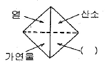
- 열분해 증발고체
- 기체
- 순조로운 연쇄반응
- 풍속
(정답률: 77%)
9. 다음 중 자연발화가 일어나기 쉬운 조건이 아닌 것은?
- 열전도율이 클 것
- 적당량의 수분이 존재할 것
- 주위의 온도가 높을 것
- 표면적이 넓은 것
(정답률: 67%)
10. 물은 100℃에서 기화될 때 체적이 증가하는데 다음 중 이로 인해 기대 할 수 있는 가장 큰 소화효과는?
- 타격효과
- 촉매효과
- 제거효과
- 질식효과
(정답률: 58%)
11. 철근콘크리트로서 내화구조 벽의 기준은 두께 몇 cm 이상이어야 하는가?
- 10
- 15
- 20
- 25
(정답률: 71%)
12. 화재의 소화원리에 따른 소화방법의 적용이 잘못된 것은?
- 냉각소화 : 스프링클러설비
- 질식소화 : 이산화탄소소화설비
- 제거소화 : 포소화설비
- 억제소화 : 할로겐화합물소화설비
(정답률: 72%)
13. 다음중 인화성 액체의 화재에 해당되는 것은?
- A급 화재
- B급 화재
- C급 화재
- D급 화재
(정답률: 75%)
14. 물질의 증기비중을 옳게 나타낸 것은? (단, 수식에서 분자, 단위는 모두 g/mol 이다.)
- 분자량/22.4
- 분자량/29
- 분자량/44.8
- 분자량/100
(정답률: 66%)
15. 내화건축물과 비교한 목조건조물 화재의 일반적인 특징을 옳게 나타낸 것은?
- 고온, 단시간형
- 저온, 단시간형
- 고온, 장시간형
- 저온, 장시간형
(정답률: 72%)
16. 가연성가스이면서도 독성가스인 것은?
- 질소
- 수소
- 메탄
- 황화수소
(정답률: 68%)
17. 다음 중 알킬알루미늄 화재시 가장 적합한 소화방법은?
- 물을 주수하여 냉각소화한다.
- 이산화탄소를 방사하여 질식소화한다.
- 팽창질석으로 질식소화한다.
- 할로겐화합물 약제를 사용하여 억제소화한다.
(정답률: 72%)
18. 정전기에 의한 발화를 방지하기 위한 예방대책으로 옳지 않은 것은?
- 접지시설을 한다.
- 습도를 일정수준 이상으로 유지한다.
- 공기를 이온화한다.
- 무도체 물질을 사용한다.
(정답률: 62%)
19. 공기의 요동이 심하면 불꽃이 노즐에 정착하지 못하고 떨어지게 되어 꺼지는 현상을 무엇이라 하는가?
- 역화
- 블로우 오프
- 불완전 연소
- 플래쉬 오버
(정답률: 70%)
20. 화재시에 발생하는 연소생성물을 크게 4가지로 분류할 수 있다. 이에 해당되지 않은 것은?
- 연기
- 화염
- 열
- 산소
(정답률: 54%)
2과목: 소방유체역학
21. 그림과 같은 고정베인 (vane)에 대하여 제트가 속도V, 유입각 α, 유출각 β로 작용할 때 베인을 고정시키는데 필요한 x 방향 성분의 힘 Fx는? (단, Q는 유량, p는 유체의 밀도이다.)
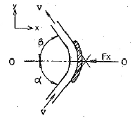
- pQV(cosα-cosβ)
- pQV(cosα+cosβ)
- pQV(sinα-sinβ)
- pQV(sinα+sinβ)
(정답률: 51%)
22. 다음 중 증발잠열(KJ/kg)이 가장 큰 것은?
- 질소
- 할론 1301
- 이산화탄소
- 물
(정답률: 86%)
23. 다음 설명 중 틀린 것은?
- 수중의 임의의 점이 받는 점수압의 크기는 수심이 깊어 질수록 커진다.
- 정치 유체에서 한 점에 작용하는 압력은 모든 방향에서 같다.
- 표준대기압은 그 지방의 고도에 따라 달라진다.
- 계기압역은 절대압력에서 대기압을 뺀 값이다.
(정답률: 63%)
24. 주사기로부터 연직 상방향으로 주사액이 분출될 때 주사기내 주사기 바늘 끝 주사액의 최고 높이에서 주력 에너지를 차례로 표시한 것은?
- 운동에너지 - 압력에너지 - 포텐셜에너지
- 압력에너지 - 포텐셜에너지 - 운동에너지
- 압력에너지 - 운동에너지 - 포텐셜에너지
- 운동에너지 - 운동에너지 - 포텐셜에너지
(정답률: 60%)
25. 그림에서 1m×3m의 평판이 수면과 45° 기울어져 물에 잠겨있다. 한쪽 면에 작용하는 유체력의 크기 (F)와 작용점의 위치(yf)는 각각 얼마인가?
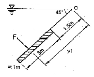
- F=62.4 kN, yf=2.38 m
- F=62.4 kN, yf=3.25 m
- F=88.2 kN, yf=3.258 m
- F=132.3 kN, yf=4.67 m
(정답률: 64%)
26. 다음 그림과 같이 단면 1, 2에서 수은의 높이 차가 h[m]이다. 압력차 P1-P2는 몇 Pa인가? (단, 축소 관에서의 부차적 손실은 무시하고 수은의 비중은 13.5물의 비중량은 9800N/m3이다.)
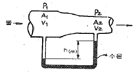
- 122500h
- 12.25h
- 132500h
- 13.25h
(정답률: 48%)
27. 주수 소화시 물의 포면장력을 약화시켜 연소물에 침투속도를 향상시키는 침투제를 무엇이라 하는가?
- Erhylene oxide
- Sodium carboxy methyl celluiose
- Wetting agent
- Viscosity agent
(정답률: 46%)
28. 분말소화약제의 특성에 관한 설명 중 틀린 것은?
- 차고, 주차장에는 제 3종 분말소화약제를 사용할 수 없다.
- 제1인산염을 주설분으로 한 분말은 담홍색으로 착색되어있다.
- CDC(Compatible Dry Chemical)는 포와 함께 사용할 수 있다.
- 최적의 소화를 나타내는 분말의 압도는 20~25㎛정도 이다.
(정답률: 61%)
29. 이산화탄소를 방사하여 산소의 체적 농도를 12% 되게 하려면 상대적으로 이산화탄소의 농도는 얼마가 되어야 하는가?
- 25.40%
- 28.70%
- 38.35%
- 42.86%
(정답률: 60%)
30. 펌프의 일과 손실을 고려할 때 베르누이 수정방정식을 바르게 나타낸 것은? (단, HP 와 HL은 펌프의 수두와 손실 수두를 나타내며, 하첨자 1, 2는 각각 펌프의 전후 위치를 나타낸다.)
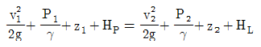
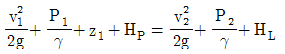
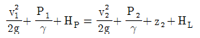
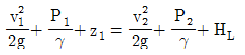
(정답률: 73%)
31. 유체가 매끈한 원 관 속을 흐를 때 레이놀즈 수가 1200이라면 관마찰계수는 얼마인가?
- 0.0254
- 0.00128
- 0.0⑤9
- 0.⑤3
(정답률: 65%)
32. 다음 중 절대단위계(MLT계)에서 힘의 차원을 바르게 표현한 것은? (단, M : 질량, L : 길이, T : 시간)
- MLT-2
- ML-1T-1
- MLT2
- MLT
(정답률: 62%)
33. 낙구식 점도계에서 측정되는 점성계수(μ)와 낙구의 속도(V)의 관계는?
- μ ∝ V
- μ ∝ V2
- μ ∝1/V
- μ ∝ 1/√V
(정답률: 31%)
34. 토출량이 0.65m3/min인 펌프를 사용하는 경우 펌프의 축동력은 약 몇 kW 인가? (단, 전양정은 40m 이고, 펌프의 효율은 50%이다.)
- 4.25
- 8.49
- 17.0
- 509
(정답률: 70%)
35. 원관 속의 흐름에서 관이 직경, 유체의 속도, 유체의 밀도, 유체의 정성계수가 각각 D, V, ρ, μ로 표시될 때 층류 흐름의 마찰계수는 f는 어떻게 표현될 수 있는가?
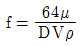
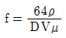
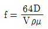
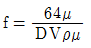
(정답률: 63%)
36. 이상기체의 정압과정에 해당하는 것은? (단, P는 압력, T는 절대온도, v는 비체적, k는 비열비를 나타낸다.)
- P/T = 일정
- Pv = 일정
- Pvk = 일정
- v/T = 일정
(정답률: 44%)
37. 펌프의 캐비테이션을 방지하기 위한 방법으로 틀린 것은?
- 흡입 양정을 짧게 한다.
- 흡입 손실 수두를 줄인다.
- 펌프의 회전속도를 높여 흡입 속도를 크게 한다.
- 2대 이상의 펌프를 사용한다.
(정답률: 74%)
38. 이상기체의 운동론에 대한 다음의 설명 중 옳은 것은?
- 분자 자신의 체적은 거의 무시 할 수 있다.
- 분자가 충돌할 때 에너지의 손실이 있다.
- 분자 사이에 척력이 항상 작용한다.
- 분자 사이에 인력이 항상 작용한다.
(정답률: 68%)
39. 유량이 4m3/min인 펌프가 3000rpm의 회전으로 100m의 양정이 필요하다면 비속도가 530~560[m3/min, m, rpm] 범위에 속하는 다단펌프를 사용할 경우 몇 단의 펌프를 사용하여야 하는가?
- 2단
- 3단
- 4단
- 5단
(정답률: 40%)
40. 다음 설명 중 틀린 것은?
- 열역학 제 1법칙은 에너지 보존에 대한 것이다.
- 이상기체는 이상기체 상태방정식을 만족한다.
- 가역단열과정은 엔트로피가 증가하는 과정이다.
- 마찰은 비가역성의 원인이 될 수 있다.
(정답률: 65%)
3과목: 소방관계법규
41. 인화성 액체인 제4류 위험물의 품명별 자정수량이다. 다음 중 옳지 않은 것은?
- 특수인화물 50리터
- 제1석유류 중 비수용성액체는 200리터, 수용성액체는 400리터
- 알코올류 300리터
- 제4유류 6000리터
(정답률: 59%)
42. 화재, 재난∙재해 그 밖의 위급한 상황이 발생한 현장에는 소방활동에 필요한 자로 그 구역에의 출입을 제한 할 수 있다. 다음 중 소방활동구역의 설정권자는?
- 소방방재청장
- 시∙도지사
- 소방대장
- 시장, 군수
(정답률: 65%)
43. 연소할 우려가 있는 구조에 대한 설명으로 다음 ( ㉮ ), ( ㉯ )에 들어갈 수치로 알맞은 것은?(관련 규정 개정이 개정되었습니다. 기존 정답은 1번이며 여기서는 1번을 누르면 정답 처리 됩니다. 자세한 내용은 해설을 참고하세요.)
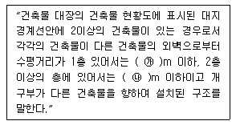
- ㉮ 5, ㉯ 10
- ㉮ 6, ㉯ 10
- ㉮ 10, ㉯ 5
- ㉮ 10, ㉯ 6
(정답률: 34%)
44. 신축∙증축∙개축∙재축∙대수선 또는 용도변경으로 해당 특정소방대상물의 방화관리자를 신규로 선임하는 경우 해당특정소방대상물의 관계인은 특정소방대상물의 완공일로 부터 며칠이내에 방화관리자를 선임하여야 하는가?
- 7일 이내
- 14일 이내
- 30일 이내
- 60일 이내
(정답률: 58%)
45. 소방본부장 또는 소방서장은 연면적 20000m2인 건축물의 건축허가등의 동의요구서류를 접수한 날부터 며칠 이내에 건축허가 등의 동의 여부를 회신하여야 하는가?(오류 신고가 접수된 문제입니다. 반드시 정답과 해설을 확인하시기 바랍니다.)
- 3일 이내
- 5일 이내
- 7일 이내
- 10일 이내
(정답률: 28%)
46. 소방자동차의 우선통행에 관한 사항으로 다음 중 옳지 않은 것은?
- 소방자동차가 화재진압 및 구조∙구급활동을 위하여 출동할 때는 사이렌을 사용할 수 있다.
- 소방자동차가 소방훈련을 위하여 필요한 때에는 사이렌을 사용할 수 있다.
- 소방자동차가 우선통행에 관하여는 소방방재창정이 정하는 바에 따른다.
- 모든 차와 사람은 소방자동차가 화재진압 및 구조∙구급활동을 위하여 출동할 때에는 이를 방해하여서는 아니된다.
(정답률: 54%)
47. 다음 중 소방기본법상의 법칙으로 5년 이하의 징역 또는 3000만원 이하의 벌금에 해당하지 않는 것은?
- 소방자동차가 화재 진압 및 구조∙구급활동을 위하여 출동하는 때에 그 출동을 방해한 자
- 사람을 구출하거나 불이 번지는 것을 막기 위하여 소방 대상물 및 토지의 사용제한의 강제처분을 방해한 자
- 화재 등 위급한 상황이 발생한 현장에서 사람을 구출하거나 불을 끄거나 불이 번지지 아니하도록 하는 일을 방해한 자
- 정단한 사유 없이 소방용수시설의 효용을 해하거나 그 정당한 사용을 방해한 자
(정답률: 50%)
48. 다음 하자보수대상 소방시설 중 하자보수보증기간이 다른 것은?
- 유도표지
- 무선통신보조설비
- 비상경보설비
- 자동화재탐지설비
(정답률: 58%)
49. 소방기본법상 소방활동에 필요한 소화전∙급수탑∙저수조를 설치하고 유지∙관리하여야 하는자는?
- 관계인
- 소방대장
- 시∙도지사
- 소방산업기술설비
(정답률: 64%)
50. 소방시설공사업 등록신청시 제출하여야 할 자산평가액 또는 기업진단보고서는 신청일 전 최근 며칠 이내에 작성한것이어야 하는가?
- 90일
- 120일
- 150일
- 180일
(정답률: 62%)
51. 다음은 소방기본법의 목적을 기술한 것이다. ( ㉮ ), ( ㉯ ), ( ㉰ )에 들어갈 내용으로 알맞은 것은?
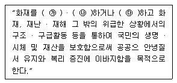
- ㉮ 예방, ㉯ 경계, ㉰ 복구
- ㉮ 경보, ㉯ 소화, ㉰ 복구
- ㉮ 예방, ㉯ 경계, ㉰ 진압
- ㉮ 경계, ㉯ 통제, ㉰ 진압
(정답률: 76%)
52. 다음은 소방시설공사업자의 시공능력평가액 산정을 위한 산식이다. ( )에 들어갈 내용으로 알맞은 것은?
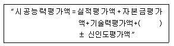
- 기술개발평가액
- 경력평가액
- 자본투자평가액
- 평균공사실적평가액
(정답률: 47%)
53. 터널을 제외한 지하가로서 연면적이 1500m2 인 경우 설치 하지 않아도 되는 소방시설은?
- 비상방송설비
- 스프링클러설비
- 무선통신보조설비
- 제연설비
(정답률: 47%)
54. 탱크시험자의 등록취소 처분을 하고자 경우에 청문실시권자가 아닌 것은?
- 시∙도지사
- 소방서장
- 소방본부장
- 행정안전부장관
(정답률: 49%)
55. 소방용수시설의 급수탑의 설치기준에 관한 사항이다. 다음 중 개폐밸브의 설치위치로 알맞은 것은?
- 지상에서 0.5m 이상 1m 이하
- 지상에서 0.8m 이상 1.2m 이하
- 지상에서 1.0m 이상 1.5m 이하
- 지상에서 1.5m 이상 1.7m 이하
(정답률: 52%)
56. 위험물제조소등의 관계인이 화재 등 재해발생시의 비상조치를 위하여 정하여야 하는 예방구정에 관한 설명으로 바른것은?
- 위험물안전관리자가 선임되지 아니하였을 경우에 정하여 시행 한다.
- 제조소등을 사용하기 시작한 후 30일 이내에 예방규정을 정하여 시행 한다.
- 예방규정을 정하여 한국소방안전원의 검토를 받아 시행 한다.
- 예방규정을 정하고 당해 제조소등의 사용을 시작하시전에 시∙도지사에게 제출한다.
(정답률: 49%)
57. 방화관리업무의 대행 또는 소방시설등의 점검 및 유지∙관리의 업을 하고자 하는 자는 누구에게 등록하여야 하는가?
- 한국소방안전협회장
- 관할 소방서장
- 소방산업기술원장
- 시∙도지사
(정답률: 59%)
58. 위험물 중 성질이 인화성 액체로서 기어유, 실린더유 그 밖에 1기압에서 인화점이 200℃ 이상 250℃ 미만의 것은?
- 제1석유류
- 제2석유류
- 제3석유류
- 제4석유류
(정답률: 38%)
59. 특정소방대상물과 관련하여 다음 중 판매시설 및 영업시설에 포함되지 않는 것은?
- 공항시설
- 소매시장
- 주차장
- 화물터미널
(정답률: 39%)
60. 방화관리업무를 수행하지 아니한 특정소방대상물의 관계인의 법칙기준은?
- 200만원 이하의 과태료
- 100만원 이하의 벌금
- 500만원 이하의 과태료
- 300만원 이하의 벌금
(정답률: 40%)
4과목: 소방기계시설의 구조 및 원리
61. 분말소화설비의 화재안전기준상 제1종 분말을 사용한 전역방출방식 분말소화설비에 있어서 방호구역 체적 1m3에 대한 소화약제는 몇 kg인가?
- 0.60
- 0.36
- 0.24
- 0.72
(정답률: 67%)
62. 옥외소화전 설비의 가압송수장치에 대한 설명으로 틀린 것은?(오류 신고가 접수된 문제입니다. 반드시 정답과 해설을 확인하시기 바랍니다.)
- 펌프는 전용으로 한다.
- 당해 소방대상물에 설치된 옥외소화전을 동시에 사용할 경우 각 옥외소화전의 노즐 선단 방수압력은 3.5MPa이상이어야 한다.
- 당해 소방대상물에 살치된 옥외소화전을 동시에 사용할 경우 각 옥외소화전의 노즐 방수량은 350ℓ/min이상이어야 한다.
- 펌프의 토출측에는 압력계를 체크밸브 이전에 설치한다.
(정답률: 54%)
63. 건축물의 주요구조부가 내화구조이고, 벽, 반자 등 실내에 면하는 부분이 불연재료로 시공된 바닥 면적이 600m2인 노유자 시설에 필요한 소화기구의 소화능력 단위는 얼마이상으로 하여야 하는가?
- 2단위
- 3단위
- 4단위
- 6단위
(정답률: 63%)
64. 다음 연결살수설비에 대한 시설기준에서 ( )안에 적합한 것은?
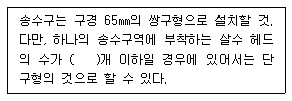
- 4
- 5
- 9
- 10
(정답률: 68%)
65. 포 소화약제의 혼합장치 중 펌프의 토출관에 압입기를 설치하여 포 소화약제 압입용 펌프로 포 소화약제를 압입시켜 혼합하는 방식은?
- 펌프 푸로포셔너 방식
- 프레져사이드 푸로포셔너 방식
- 라인 푸로포셔너 방식
- 프레져 푸로포셔너 방식
(정답률: 74%)
66. 분말소화설비의 가압식저장용기에 설치하는 안전밸브의 작동압력은 몇 MPa 이하인가? (단, 내압시험압력은 25.0 MPa, 최고사용압력은 5.0MPa로 한다.)
- 4.0
- 9.0
- 13.9
- 20.0
(정답률: 36%)
67. 판매시설의 지하층에 유용한 피난기구로만 조합된 것은?
- 피난용트랩, 피난교
- 피난사다리, 미끄럼대
- 피난교, 미끄럼대
- 피난용트랩, 피난사다리
(정답률: 69%)
68. 다음 중에서 연결송수관설비의 배관을 습식설비로 설치하여야 하는 소방대상물은?
- 지상 5층으로 연면적이 6000m2인 소방대상물
- 지상 11층 이상인 소방대상물
- 지면으로부터 높이가 30m 이상 또는 지상 10층인 소방대상물
- 지면으로부터 높이가 70m 이상인 소방대상물
(정답률: 67%)
69. 분말소화설비에 분말소화약제 1kg당 저장용기의 내용적 기준 중 틀린 것은?
- 제1종 분말 : 0.8ℓ
- 제2종 분말 : 1.0ℓ
- 제3종 분말 : 1.0ℓ
- 제4종 분말 : 1.0ℓ
(정답률: 73%)
70. 전동기에 의한 펌프를 이용하는 스프링클러 설비의 가압송수장치에 대한 설치 기준으로 옳은 것은?
- 가동용수압개폐장치 (압역챔퍼)를 사용할 경우 그 용적은 80ℓ 이상의 것으로 한다.
- 물올림장치 설치는 유효수량 100ℓ 이상으로 한다.
- 정격토출 압력은 하나의 헤드선단에 0.1kgf/cm2 이상, 1.2kgf/cm2 이하의 방수압력이 될 수 맀는 크기로 한다.
- 총압펌프의 정격토출압력은 그설비의 최고위 살수장치의 자연압보다 적어도 0.1MPa 과 같게 하거나 가압송수 정치의 정격토출압력보다 크게 한다.
(정답률: 52%)
71. 연결 송수관 설비의 방수구 설치에서 연결송수관설비의 전용방수구 또는 옥내소화전방수구로서 구경은 몇 mm의 것으로 설치하는가?
- 40
- 50
- 65
- 100
(정답률: 49%)
72. 특수가연물의고무제품인 운동화를 저장하는 창고에 물분무 설비를 하려고 한다. 필요한 수원은 몇 m3이상이어야 하는가? (단, 창고의 높이는 7m이고 바닥면적은 80m2이다.)(관련 규정 개정전 문제로 여기서는 기존 정답인 4번을 누르면 정답 처리됩니다. 자세한 내용은 해설을 참고하세요.)
- 16
- 14
- 12
- 10
(정답률: 54%)
73. 폐쇄형 스프링클러헤드를 사용하는 설비의 방호구역∙유수 검지장치는 하나의 방호구역의 바닥면적의기준은 몇 m2를 초과하지 않아야 하는가?
- 1500
- 2000
- 2500
- 3000
(정답률: 73%)
74. 액화천연가스(LNG)를 사용하는 아파트에 자동식 소화기를 설치하려 한다. 공기보다 가벼운 가스를 사용하고자 할 때 자동식소화기의 탐지부 설치 위치로 알맞은 것은?
- 천장 면으로부터 30cm 이하의 위치에 설치한다.
- 소화약제분사 노츨로부터 30cm 이상의 위치에 설치한다.
- 바닥 면으로 부터 30cm 이하의 위치에 설치한다.
- 가스차단장치로부터 30cm 이상의 위치에 설치한다.
(정답률: 78%)
75. 소화용수설비를 설치하여야 할 소방대상물에 유수를 사용할 수 있는 경우에는 유수의 양이 1분당 몇 m3 이상이면 소화수조를 설치하지 않아도 되는가?
- 0.3
- 0.5
- 0.6
- 0.8
(정답률: 56%)
76. 경유 10000리터를 저장하는 옥외탱크저장소에 고정포방 출구를 설치할 때 다음 조건에 의해 포소화약제의 최소 저장량은 몇 리터인가?
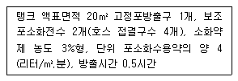
- 432
- 552
- 612
- 792
(정답률: 21%)
77. 자동차 차고나 주차장에 할론 1301 소화약제로 전역 방출방식의 소화설비를 한 경우 방호구역의 체적 1m3당 얼마의소화약제가 필요한가?
- 0.4kg 이상 1.1kg 이하
- 0.32kg 이상 0.64kg 이하
- 0.36kg 이상 0.71kg 이하
- 0.60kg 이상 0.71kg 이하
(정답률: 50%)
78. 경사 강하식 구조대에 대한 내용 중 잘못된 것은?
- 구조대는 연속하여 활강할 수 있는 구조이어야 한다.
- 구조대는 본체는 걍하방향으로 봉합부가 설치되지 아니하여야 한다.
- 본체의포지는 하부지지 장치에 인장력이 균등하게 걸리도록 부착하여야 한다.
- 입구틀의 크기는 지름 60cm 이상의 구체가 통과할 수 있어야 한다.
(정답률: 45%)
79. 다음은 상수도소화전의 설비의 설치기준에 대한 설명이다. 괄호 안에 알맞은 것은?
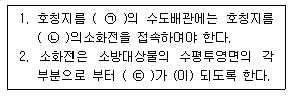
- ㉠ 75㎜ 이상, ㉡ 100㎜ 이하, ㉢ 140m 이상
- ㉠ 75㎜ 이상, ㉡ 100㎜ 이상, ㉢ 140m 이하
- ㉠ 75㎜ 이하, ㉡ 100㎜ 이하, ㉢ 140m 이하
- ㉠ 75㎜ 이하, ㉡ 100㎜ 이상, ㉢ 180m 이상
(정답률: 60%)
80. 옥내소화전설비의 배관에 관한 설명으로 틀린 것은?
- 유량측정장치는 정격토출량의 150%까지 측정할 수 있는 성능이 있어야 한다.
- 펌프 흡입측 배관에 설치하는 급수차단용 개폐밸브는 버터프라이밸브 외의 개폐표시형 밸브를 설치하여야 한다.
- 펌프 흡입측 배관에는 여과장치를 설치한다.
- 수은상승방지를 위한 배관에는 릴리프밸브를 설치한다.
(정답률: 63%)